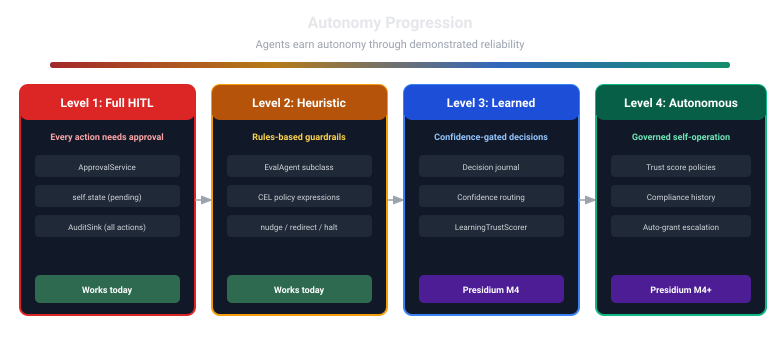

Roadmap¶
Phase-based development plan for Presidium.
Philosophy¶
Documentation-driven development. Design docs and RFCs are written and reviewed before implementation begins. Each milestone (M) represents a coherent, shippable increment.
Implementation Priority (P0 / P1 / P2)¶
Added 2026-08-22, after a full cross-project completion review (part of a wider effort covering
python-civitas,presidium, andfabricatogether — seecivitas-io/context). This section is orthogonal to the M-numbered milestones below: it says what order to actually do things in to reach a genuinely complete, trustworthy Presidium, which cuts across several milestones at once. The M-sections remain the source of truth for scope; this section is the source of truth for sequencing and urgency.
P0 — blocks calling Presidium "complete." Fix before anything else.¶
These are either correctness/trust gaps hiding behind claims of completeness, or the single structural blocker to the three-pillar platform (Civitas + Presidium + Fabrica) working end to end.
- Fix the Ed25519 identity binding. ~~
GovernedRuntime.start()hardcodesAgentRecord(public_key="", ...)~~ Done 2026-08-22.GovernedRuntimenow generates/loads a real, persistentcivitas.security.identity.AgentIdentityper agent (AgentIdentity. load_or_generate(name, key_dir), defaultkey_dir=.presidium/keys, overridable viapresidium.registry.key_dirin topology YAML or the constructor directly) and binds its realpublic_key_b64()intoAgentRecord.public_key.AgentRegistrygained a realverify_signature(name, data, signature) -> boolmethod (shared implementation in the newpresidium.identitymodule, fail-closed-as-a-plain-return-value likehas_grant()— never raises), implemented inInMemoryRegistry,SqliteRegistry, andpresidium-contrib'sPostgresAgentRegistry. 18 new real tests (real Ed25519 keypairs, real sign/verify round trips, persistence-across-restarts, tampered-data/wrong-key/malformed-key/ missing-pynacl failure paths). Found and fixed a real, separate, pre-existing bug while doing this work:presidium_contrib.service.registry.RegistryServernamed its own governance registry attributeself._registry, colliding withcivitas.process.AgentProcess's own reserved_registryattribute (Civitas's internal name-routing registry) — a real Supervisor wiring aRegistryServerinto a live tree would silently clobber one with the other. Renamed toself._agent_registry; caught by mypy only after thecivitasPyPI-pin fix below madecivitas's realpy.typedmarker visible for the first time..gitignoregained.presidium/(real private key material must never be committable, even by accident). Coverage: presidium core 90.97% → 95.24%. - Pin
civitasto a real PyPI release, notgit/branch = "main". Done 2026-08-22. Removed the[tool.uv.sources]git override from the workspace root; bumpedpresidium's own dependency fromcivitas>=0.3tocivitas>=0.11.0(the real, current, tested-against version — matchescivitas-io/fabrica's own precedent). Also addedpynacl>=1.5as a real, direct (not optional) dependency, since identity binding is now a core, always-on capability, not an opt-in extra. Real, unexpected side effect worth knowing:civitasonly gained its ownpy.typedmarker in a real, recent release — three# type: ignore[misc] # civitas lacks py.typedcomments (onGovernedMessageBus,PolicyEvaluatorServer,RegistryServer) were now genuinely unused and removed, which is what surfaced theRegistryServerbug above (a broad class-level ignore had been silently suppressing real attribute-type errors in the class body, not just the class definition line). Also added missingmypyoverride entries forhvac/asyncpg(no published stubs), found adjacent to this work. All 442+ tests (354 core + 108 contrib) pass, 3x stable, mypy and ruff clean on both packages. - Close the
presidium_contrib.service.policy/.registry0%-coverage gap. Done 2026-08-22. Both files now at 100% coverage (up from 0%) — 14 new tests: unit tests callinghandle_call()directly (test_service_policy.py,test_service_registry.py) plus a real end-to-end integration suite through an actualcivitas.Runtime/Supervisor(tests/integration/test_service_mode_real_runtime.py), including a dedicated regression test proving theself._registry/AgentProcess._registrycollision fix (above) survives real Supervisor wiring, not just a static rename. Found and fixed a second real, previously-hidden bug this same pass:PolicyEvaluatorServer._handle_load()stored a raw string inPolicyRule.decisioninstead of converting it to thePolicyDecisionenum —CelPolicyEngine.evaluate()accepted it silently, but_handle_evaluate()'s ownresult.decision.valuethen crashed with a realAttributeErroron every non-default-ALLOW decision. 0% coverage had masked this entirely; caught immediately by the first real test that exercised a non-trivial policy outcome.presidium-contribcoverage: 71% → 82%. - Build M7 (Presidium Server) itself. Done 2026-08-22/23.
check_grant()over real REST+mTLS is shipped and now genuinely proven end to end (real handshake test, real publishedcivitas>=0.11.3dependency, no workaround) -- the structural gap between "three separate pillars" and "one integrated platform" is closed for thecheck_grantpath. Registry CRUD/ approval/credential endpoints remain deferred (see M7 section below) -- not part of this item's own scope. - Wire
GovernedModelProvider/GovernedToolProviderto actually call a backend, not just check permission. Done 2026-08-22. Newpresidium.providers.civitas_adaptersmodule:GovernedModelProviderAdapter/GovernedToolAdapter, real structural implementations ofcivitas.plugins.model.ModelProvider/civitas.plugins.tools.ToolProvider, each constructed per-agent (agent_namebound at construction — the same, already-established patterncivitas.process.AgentProcess.connect_mcp()uses forcivitas-io/fabrica's ownMCPTool, not a new one invented here).GovernedRuntimegainedmodel_for(agent_name, backend)/tool_for(agent_name, backend)factory methods, mirroring Civitas's ownmodel_for()naming. DENY still raisesPolicyDeniedError(reusingcheck()'s existing behavior exactly) — a real, deliberate difference fromcheck_grant()'s non-raising HTTP-boundary design, correct here because an in-process Python exception through the calling agent's own error boundary is the idiomatic Civitas convention, not a limitation to work around. 13 new tests, both new/ touched modules at 100%/83% coverage (runtime.py's remaining gap is pre-existing, unrelated). Scope note, precise not overclaimed: this solves "canGovernedModelProvider/GovernedToolProviderbe a drop-in CivitasModelProvider/ToolProvider" — it does not build the separate, largerLLMGatewayBackend/ToolsGatewayBackendpluggable-vendor abstraction fromdocs/design/llm-gateway.md/mcp-gateway.md(AgentGateway/LiteLLM/etc. as swappable backends) — that remains real, designed, not built (P1 above).backend: ModelProvider/backend: ToolProviderhere can already be any object satisfying those real Civitas Protocols, including a future pluggable-vendor adapter, without further changes to these two new classes.
Recommended sequence (cheapest/most urgent first, not milestone order): ~~Ed25519 binding fix~~
→ ~~civitas PyPI pin~~ → ~~service/* test coverage~~ → ~~M7 network layer~~ →
~~GovernedModelProvider/GovernedToolProvider backend wiring~~. All five done as of
2026-08-22. Shipping a first real presidium/presidium-contrib PyPI release (see M5/P1 below)
can now genuinely be considered — the fictional-cryptographic-identity-claim blocker that made
releasing premature before is resolved. M5 itself (CLI, docs site, example applications) is still
real, separate work, not automatically unblocked by this alone.
P1 — real, designed, necessary for genuine production-readiness, not immediately blocking¶
-
AgentGatewayClient's MCP tool-side gap — DONE, 2026-08-24. Real vendor research (docs/design/agentgateway-vendor-research-2026-08.md) against AgentGatewayv1.4.1, a real design pass (docs/design/mcp-gateway.md's "Design decisions, 2026-08-24"), and real implementation, all same session. Newpresidium/providers/gateway.py(LLMGatewayBackend/ToolsGatewayBackendProtocols,GatewayModelProvider/GatewayToolProvider);GovernedToolProvidergainedcheck_resource()/post_check_resource()for the newagent:<name>grant namespace (a real double-prefix bug caught and fixed during implementation, before it shipped);AgentGatewayClient.list_tools()/call_tool()are real MCPtools/list/tools/callover Streamable HTTP (the exact transport GH #26 shipped), verified end to end against a real running MCP server, not mocked. 167presidium-contribtests pass (+5), 452presidiumtests pass (+13),ruff/mypy --strictclean. Any AgentGateway pin must be>=1.4.0(GHSA-mvgg-jvj2-4frq, a real HIGH-severity security advisory, is fixed exactly there). -
AgentGatewayClient.delegate_to_agent()real implementation (A2A half) — DONE, 2026-08-24, same day as the MCP-tool half above. Real vendor research first (docs/design/a2a-delegation-vendor-research-2026-08.md): confirmed the reala2a-sdk(1.1.2,a2aproject/a2a-python) client API (create_client()/send_message()/get_stream_response_text()) and the real, new, load-bearing finding that AgentGateway's A2A proxy is per-upstream-agent (one route per agent server, agent-card URL rewriting), not federated behind one shared endpoint the way MCP tools are.AgentGatewayClientgaineda2a_routes: dict[str, str] | None(an explicit target-name -> gateway-route-URL map) and a realdelegate_to_agent()mappingarguments["text"]onto a real A2A text message (or the whole dict onto a structured data message otherwise), extracting the result viaget_stream_response_text()and raising a newAgentGatewayDelegationErroron an unconfigured target or a terminal FAILED/REJECTED/CANCELEDTaskState. Verified end to end against a real running A2A server (tests/integration/fixtures/hello_a2a_server.py, a faithful port of the real, official a2a-samples Hello World reference agent's exactTasklifecycle, not simplified) — 6 new tests, not mocked, all passing on the first real run. 469presidiumtests pass, 183presidium-contribtests pass (+6), 96% coverage on the changed client file,ruff/ruff format --check/mypy --strictclean. - Build
presidium-contrib[spiffe](real SPIRE SVIDs) — DONE, 2026-08-24. Real vendor research (docs/design/spiffe-vendor-research-2026-08.md), a real design pass (docs/design/agent-registry.md's updated "M3+ upgrade path" section), and real implementation, verified end to end against an actual running SPIRE v1.15.3 server + agent on the homelab (not mocked).AgentRecordgainedpublic_key_algorithm(additive, Ed25519 stays default);presidium.identity.verify_agent_signature()is now algorithm-aware (cryptographyadded as a real, hard core dependency, matchingpynacl's own precedent);AgentRegistry.update_identity()added across all three backends for real SVID rotation (two real double-_save()-omission bugs found and fixed during implementation, before they shipped); newpresidium_contrib.spiffe.SpiffeIdentitySource/bind_identity_to_registry(), a real async bridge over the officialspiffeSDK's own blocking, thread-based Workload API client. 462presidiumtests pass (+10), 174presidium-contribtests pass (+5, all passing for real on the homelab, 4 correctly hardware-gated-skipped elsewhere),ruff/mypy --strictclean. Certificate-based mTLS between agents and cross-deployment federation remain real, separate, not-yet-built future directions (seeagent-registry.md's updated section). - LiteLLM adapter + stub adapters (Kong/Portkey/Cloudflare AI Gateway/Helicone/TrueFoundry) — real market flexibility; AgentGateway already covers the reference path so this isn't urgent.
- Default-deny for
CelPolicyEngine's no-rule-matched case — DONE, 2026-08-24. Was: direction decided (default DENY over default ALLOW, reduces blast radius), a real implementation attempt reverted the same earlier session after breaking 24 tests, needing its own dedicated design pass before trying again. That design pass happened, with the user, directly engaging the real question "is default-deny good practice, and should it be configurable" -- resolved as: yes, hard default-deny, with two real, explicit, loud opt-in knobs (allow_unmatched_requests: bool = False,unmatched_enforcement: EnforcementMode = HARD), matching this codebase's ownallow_ungoverned/allow_unsandboxednaming precedent rather than a neutral, equally-weighteddefault_decisionenum -- because an unopinionated toggle would be picked by exactly the deployments (fast evaluation, no dedicated security review) that most need the safe default, undermining the entire point. All four of the originally-scoped follow-up items done, not shortcut: (1) hard, unconditional default-deny chosen, PLUS theunmatched_enforcement=ADVISORYmigration path as a genuinely separate, real capability (not conflated with the security-relevantallow_unmatched_requeststoggle); (2) every existing example/test policy set given an explicit terminal ALLOW rule across 10 test files (test_cel.py,test_governed_tool.py,test_governed_model.py,test_civitas_adapters.py,test_gateway_provider.py,test_governed_runtime.py,test_service_policy.py,test_gateway_agent.py,test_presidium_server_real_gateway.py,test_service_mode_real_runtime.py) -- a new, per-packageALLOW_ALLfixture in eachtests/policy_fixtures.py, not a shortcut viaallow_unmatched_requests=Trueexcept where a test is genuinely orthogonal to policy content (GenServer coexistence); (3)docs/design/policy-engine.md's own P5 decision corrected in place (struck through, not deleted, with the real empirical reasoning that overturned it) anddocs/guides/getting-started.md's tutorial updated with a real, working explicit-ALLOW rule plus a new "Default-deny" callout section; (4) the drafted reason string ("No policy rule matched this request (fail-closed default -- no implicit allow)") shipped exactly as drafted.presidium_contrib.service.policy.PolicyEvaluatorServeralso gained the same two forwarded constructor knobs. 466presidiumtests pass (+8 net, several renamed/split to genuinely test the new behavior, not just patched), 175presidium-contribtests pass (+2), 100% coverage on both changed engine files,ruff/mypy --strictclean. - Trust ceiling propagation — DONE, real, shipped (2026-08-22). Was: a real,
currently-exploitable "trust washing" gap surfaced by a direct comparison against Microsoft's
Agent Governance Toolkit (
microsoft/agent-governance-toolkit)'sAGENTMESH-IDENTITY-TRUST-1.0spec.AgentRecord.trust_ceiling: float | None+LinearTrustScore(ceiling=...)(clamps.value's getter,HUMAN_OVERRIDE/set_value()deliberately still respects it — a hard boundary, not a bypass; an admin who wants to grant more must explicitly raisetrust_ceilingitself). Newpresidium.lineage.compute_child_ceiling()(min(requested or 1.0, parent.trust_ceiling or 1.0, parent.trust_value), naturally transitive across a multi-hop chain, a one-time snapshot at registration — not continuously re-derived). Enforced insideregister()/add_grant()on all three registry backends (InMemoryRegistry,SqliteRegistry,PostgresAgentRegistry) — defense in depth, not an opt-in helper a caller could skip. A danglingparent_agent_idnow fails closed (UnresolvableParentError) rather than being silently ignored, since silently ignoring it would reopen the exact bypass this closes. - Monotonic capability narrowing on delegation/spawn — DONE, real, shipped (2026-08-22).
Same source comparison. AGT requires every delegated/spawned agent's granted capabilities to be
a strict subset of its delegator's own, plus a hard delegation-depth limit (AGT's default: 10,
reused as-is). New
presidium.lineage.validate_grant_narrowing()— checks the union of (resource, action) pairs is a subset of the parent's (Presidium's grant model has no wildcard concept, so AGT's "reject wildcard delegation" rule is moot here; deliberately does NOT comparescope/condition/expires_atnarrowing — proving a CEL condition string is "narrower" is undecidable in general, a documented non-goal). RaisesGrantEscalationErrorrather than silently narrowing, since unlike trust, a grant is binary and can't be safely auto-clamped. Newpresidium.lineage.compute_child_depth()+AgentRecord.depth, stored/inherited at registration (not chain-walked),max_delegation_depthconfigurable per registry instance. Enforced inregister()andadd_grant()(an escalation attempt can't just be deferred to a lateradd_grant()call), across all three registry backends. 60+ new tests (pure-function unit tests intest_lineage.py, registry-level integration tests parametrized overInMemoryRegistry/SqliteRegistry, mock-basedPostgresAgentRegistrytests proving the exact same sharedpresidium.lineagefunctions are used, not a divergent reimplementation). All 439presidium+ 158presidium-contribtests pass, 3x stable,ruff/mypy --strictclean. Real, deliberate scope note: there is still no real "spawn" composition anywhere in the whole system (Civitas'sRuntime.spawn()doesn't call Presidium; Fabrica'sCivitasBridge.request_supervision()is a pass-through, not called by Fabrica's own managers in v1) — this closes the registry-level hole so that whichever real orchestrator eventually gets built inherits safety by default, not a live exploit against a running feature. - Compose the three MCP governance primitives into one real pipeline — DONE, 2026-08-24.
New
presidium_contrib.mcp_gateway.pipeline.GovernedMcpToolPipeline: poisoning check (fail- closed by default,allow_unapproved_toolsopt-out) -> redact arguments intoActionRequest.parametersfor policy/audit visibility -> realGovernedToolProvider.check()PRE_TOOL authorization -> the real, unredacted backend call -> optionalPIIDetector.scan_dict()enrichment of the result withcontains_pii/pii_pattern_names(opt-in bypii_detectorpresence) ->post_check()POST_TOOL authorization (a CEL policy can now genuinely referenceresult.contains_pii, closing this doc's own "Should POST_TOOL be able to modify results" open question with a separate, explicitmask_pii_in_resultstoggle rather than a new CEL decision type). 15 new tests, 100% coverage on the new file,ruff/ruff format --check/mypy --strictclean. Real release gap found and named, not silently ignored: verifying this via a real fresh-venv install required buildingpresidiumfrom local source (not pip-installing the real published PyPI version) —presidium.providers.gateway(this session's own earlier AgentGatewayClient work) isn't in any releasedpresidiumversion yet. Bothpresidium(last real release v0.2.1) andpresidium-contrib(v0.2.0) have accumulated substantial real, unreleased functionality since — a real, standing item, not urgent but worth doing soon (see "What's next" in HANDOFF.md). - Real, richer candidates found in the same AGT comparison, worth evaluating: message
signing with replay protection, session tokens with TTL, sliding-window rate limiting (already
flagged above under M7), and CVE-feed integration (OSV API) against MCP servers in active use — AGT's
MCP-SECURITY-GATEWAY-1.0spec covers all of these; none are committed here yet, listed as real candidates to evaluate, not a plan to copy wholesale. - DONE, 2026-08-24. Fixed
AGENTS.md— not by building thelitellm/kong/portkey/cloudflare_ai_gateway/helicone/truefoundryadapters (still not built, still the LiteLLM item above), but by correcting the doc to state that plainly: it previously described them as installable extras/stub modules, when none of that code or thosepyproject.tomlextras exist at all. Also fixed: stalepresidium.protocols/presidium.modelsmodule names (real names are distributed Protocols + singularpresidium.model), a stale "Pre-alpha (documentation-first phase)" status line, a staleDependency Rulesclaim (presidiumdepends on more than justcivitas/cel-pythonnow —pynacl/cryptographytoo), and the monorepo tree missingpresidium.identity/presidium.lineage/presidium_contrib.spiffe/presidium_contrib.serverentirely (all real, shipped modules from this session, never added to this file). - New real release of
presidium/presidium-contrib— DONE, 2026-08-24.presidiumv0.3.0 andpresidium-contribv0.3.0, both confirmed live on the real PyPI index (pip install presidium presidium-contribandpip install "presidium-contrib[agentgateway,spiffe]", verified via a real fresh-venv install against the actual published packages, not local source). CHANGELOG.md's[0.3.0]entry covers everything:providers/gateway.py,identity.py/lineage.py,presidium_contrib.spiffe, A2A delegation,GovernedMcpToolPipeline, CEL default-deny (a real, documented breaking behavioral change),scopethreading. Real, load-bearing fix caught before release:presidium-contrib's own dependency floor was stillpresidium>=0.1despite needingpresidium.providers.gateway(only real as of this same 0.3.0) — bumped topresidium>=0.3.0, closing the exact class of bug that would have made a freshpip install presidium-contribsilently resolve an incompatiblepresidium.presidiumtagged/published first, confirmed live via PyPI's JSON API, before taggingpresidium-contrib— order matters given the new floor. - Documentation reliability follow-ups — opened 2026-08-27, same council-reviewed
exercise already run on
python-civitas(see that repo'sdocs/milestones.md), scoped down here because the council found Presidium's doc risk shape is different: ~10,000 lines ofdocs/design/,docs/research/,docs/vision/,docs/rfcs/content is Draft/speculative by design, not stale reference material, so most of the python-civitas playbook doesn't transfer as-is. Done, 2026-08-27 (seedocs/log.mdfor full detail) — the wrongcivitas-forgeupstream repo name in 5 files, the staledocs/index.mdstatus header contradicting its own linked roadmap, plus three real inaccuracies found reading the current-reference tier end to end: a phantompresidium-auditpackage described as real indocs/architecture/overview.md, a fabricatedModelProvider.chat()signature in the same file's Integration Points table, aREADME.mdclaim that directly contradictedAGENTS.mdabout whetherGovernedModelProvider/GovernedToolProviderare drop-in Civitas protocol implementations (they're not — the real Adapter classes are), fabricated Protocol method names for those same two classes indocs/architecture/packages.md, and a fully aspirational, never-implemented YAML config schema acrossdocs/architecture/stack.md's three deployment scenarios. Still open, in the council's own priority order: - A minimal required frontmatter status field (Draft/Proposed/Shipped/Superseded) on every doc
under
docs/design/,docs/research/,docs/vision/,docs/rfcs/, lint-checked in CI — the council's core finding was that the real gap here is a reader (human or agent) having no way to tell "how it works" from "what we're thinking about" without opening every file. - A mechanical currency check (not hand-maintained prose) comparing
docs/index.md's milestone claims againstdocs/vision/roadmap.md's actual state, so this exact bug class can't recur. - A code-fence import checker (mirroring
python-civitas'stests/integration/test_docs_codeblocks.py) scoped ONLY todocs/index.md,docs/architecture/*,docs/guides/getting-started.md, andREADME.md— explicitly excludingdocs/design/research/vision/rfcs, where forcing Draft code sketches to import-check against current source would produce false positives and train people to ignore the check. - ✅
mkdocs build --strictin the docs deploy workflow — done, 2026-08-27, as part of building this repo's first real mkdocs site (mkdocs.yml,docs/index.md,.github/workflows/docs.yml). Found a pre-existingmkdocs.ymlwas missing from the working tree entirely (in git history, absent on disk — unrelated to this audit, fixed alongside it) and two docs/design/policy-engine*.md files hardcoding a local-machine-only filesystem path. Strict build is clean: zero warnings. - An explicit archive/delete-vs-label decision for any design docs clearly superseded by a shipped milestone, rather than defaulting to "label everything in place" forever.
- AGENTS.md needs no thin-router rework — it's already 389 lines with its own documented self-correction history (2026-08-24). Deliberately not manufacturing work there.
- M4: Autonomy Progression (see below) — real, well-specified, but Presidium is genuinely usable without it (trust tiers work fine statically in the meantime).
- [~] M5: SDK + CLI, docs site, example applications. The "real first PyPI release + git
tag" half is DONE (
presidiumv0.4.0,presidium-contribv0.7.0, both live on PyPI, real git tags/GitHub Releases). The CLI half started, 2026-08-24 -- see the full M5 section below for real detail (presidium version/registry list/policy validate/trust replayshipped; docs site/examples/v1.0.0/presidium run/live-server CLI mode remain). - M8: Performance Research — Complete, 2026-08-25. Real benchmarks, real comparison,
real recommendation (see M8 below and
docs/design/performance-research.md).
P2 — deferred by design, commercial, or dependent on things outside our control¶
- M6: Cloud — explicitly commercial, multi-tenant SaaS; not core-completeness.
- Inbound A2A exposure — needs Civitas to gain an A2A server role first; a Civitas-side feature, not Presidium's to unblock alone.
- RFC-002 (multi-dimensional evaluation) — already labeled "Future Investigation," research-first, no concrete plan yet.
- Deferred adapters (
CedarPolicyEngine,TemporalApprovalService) — no unique capability gap; CEL+OPA and Slack/Webhook already cover the space.
M1: Foundation¶
Goal: Establish project identity, architecture, and documentation.
Status: Complete
- Repository setup (monorepo, uv workspace, CI/CD)
- AGENTS.md
- Vision documents (manifesto, positioning, roadmap)
- Architecture overview and package map
- Interface-first architecture decisions (2-package structure, CEL default, library-first)
- Competitive research archive
- CNCF standards alignment principle (SPIFFE, OTEL, CEL)
- RFC-001: Presidium scope and boundaries (draft exists, needs finalization)
- Design doc: Agent Registry (requirements + design + research, reviewed)
- Design doc: Policy Engine (requirements + design, reviewed)
- Design doc: Credential Provider (requirements + design)
- Design doc: Approval Service (requirements + design)
- Design doc: Audit Enricher (requirements + design)
- Design doc: Topology Integration (requirements + design)
- Agent registry industry research (AWS, Google, Microsoft, IBM, SPIFFE, K8s RBAC)
- Full M2 design review (Oracle + consistency check, 12/12 issues resolved)
- RFC-002: Multi-dimensional evaluation (seed for post-M4 investigation)
- Community feedback on architecture
Deliverable: Complete documentation. No code.
M2: Core Interfaces + CEL Policy¶
Goal: All Protocol definitions in presidium core, plus working library-mode defaults. A developer can pip install presidium and have complete in-process governance.
Status: Complete. 245 tests, 95% coverage, mypy strict, ruff clean. Integration tests passing.
- Requirements and design for all 9 components (35 design decisions, 12 review issues resolved)
-
presidiumpackage — Protocol definitions + default implementations: AgentRegistry+InMemoryRegistry/SqliteRegistry— SPIFFE-compatiblepresidium://identity, Ed25519 binding, K8s-style grants with CEL conditions,trust_eventshistory tablePolicyEngine+CelPolicyEngine— 3 evaluation stages (pre_tool, pre_llm, registration), fail-closed, advisory/soft/hard enforcement modes, multi-stage rulesCredentialProvider+EnvCredentialProvider/FileCredentialProvider— grant-based credential access (credential:{name}), structured loggingTrustScorer+LinearTrustScore— 0.0-1.0, 3 tiers, lazy-on-read decay, materialize-on-writeApprovalService+CallbackApprovalProvider— async HITL with 5-min default timeout, fail-closedAuditEnricher+InProcessAuditEnricher— middleware sink, re-enrichment guard, fail-open enrichmentGovernedModelProvider— wraps ModelProvider, evaluates pre_llm policiesGovernedToolProvider— wraps ToolProvider, evaluates pre_tool policies-
GovernedRuntime— programmatic constructor +from_config()YAML-based construction - 2 Civitas changes: add
"presidium"to known keys + addfrom_config_dict()classmethod - Integration tests (compliant agent, denied agent, approval-gated, from_config YAML loading)
- Getting started guide
Deliverable: pip install presidium — complete library-mode governance. No sidecars, no infrastructure, no Rego.
M3: Contrib Adapters + Trust Scoring Foundation¶
Goal: presidium-contrib with adapters for existing products and reference implementations. Trust scoring enhancements for enterprise adoption: windowed aggregation, controllability, cold-start, spec introspection, bounded learning. Post-execution evaluation stages.
Requirements: trust-scoring-requirements.md (FR-3.1–3.8, FR-E.1–E.6)
-
presidium-contribpackage (second workspace member) - Post-execution evaluation stages:
POST_TOOL,POST_LLM - Adapters:
OPAPolicyEngine,OpenBaoCredentialProvider,AgentGatewayClient,SlackApprovalService,WebhookApprovalProvider - Reference impls:
PostgresAgentRegistry,LearningTrustScorer(refactored to usepresidium.scoringlibrary) - Trust scoring enhancements (presidium core):
- Windowed aggregation — last N events or last T hours (FR-3.1)
- Exponential decay opt-in with configurable half-life (FR-3.2)
- Controllability filter —
controllable: boolon events (FR-3.3) - Cold-start strategies — optimistic, neutral, pessimistic (FR-3.4)
- Spec introspection —
IntrospectableScorerProtocol withScoringSpec+spec_hash(FR-3.5) - Bounded learning with max weight delta and rate limiting (FR-3.7)
- Reason surfacing —
QueryableScorerProtocol (FR-3.8) - Enterprise requirements:
- Spec pinning for compliance periods (FR-E.1)
- Override attribution —
actor_idrequired on HUMAN_OVERRIDE (FR-E.2) - Performance budget — <1ms p99 reads (FR-E.3)
- Zero-downtime M2→M3 migration (FR-E.4)
- Determinism contract on scorers (FR-E.5)
- OpenTelemetry spans for trust operations (FR-E.6)
- Deferred adapters:
CedarPolicyEngine,TemporalApprovalService -
pre_messageevaluation stage (Civitas MessageBus hook viaGovernedMessageBus) - MCP governance reference impl (tool poisoning, credential redaction, PII masking)
- Service mode GenServer wrappers (
PolicyEvaluatorServer,RegistryServer) - Policy hot-reload without restart (
GovernedRuntime.reload_policies())
Deliverable: pip install presidium-contrib[opa,openbao,slack,agentgateway] + enterprise-ready trust scoring
M4: Autonomy Progression¶
Priority: P1 — real and well-specified, but Presidium is genuinely usable without it (trust tiers work fine statically in the meantime). See "Implementation Priority" above.

Goal: Close the feedback loop. Agents earn autonomy through demonstrated reliability. Multi-dimensional trust scoring. Capability gating by tier. Decision journal for full auditability.
Requirements: trust-scoring-requirements.md (FR-4.1–4.6)
- Multi-dimensional trust scoring —
MultiDimensionalTrustScorerProtocol with per-dimension scores and configurable aggregation (FR-4.1) - Capability gating — tier-to-capability mapping via
CapabilityGate, CEL referencesagent.trust.capabilities(FR-4.2) - Graduated deactivation —
TierUpgraded/TierDegradedevents, subscriber pattern, no binary kill switch (FR-4.3) - Confidence-gated routing —
ConfidenceRouterselects agents or escalates to human (FR-4.4) - Decision journal — all routing decisions and tier transitions recorded with trust snapshots (FR-4.5)
- Trust spec export — JSON, Markdown, detached JWS for tamper-evidence (FR-4.6)
- Heuristic-to-learned progression —
LearningTrustScoreractivates after data threshold - Autonomy level API — agents query current level and promotion criteria
- Design doc: Autonomy Progression
Deliverable: Agents that start constrained and earn autonomy through behavior. Full decision audit trail.
M5: SDK + CLI¶
Priority: P1. The gating condition (every P0 item true, no fictional cryptographic-identity
claim) is now genuinely met -- presidium v0.4.0/presidium-contrib v0.7.0 are real, live PyPI
releases with a real Ed25519 identity binding and a real, proven mTLS handshake behind them. The
first real CLI shipped 2026-08-24 (see below); what remains here is docs-site/examples/presidium
run/the live-server registry-CRUD CLI mode, not the release itself.
Goal: One package, one install, complete experience. Trust CLI for operators.
Requirements: trust-scoring-requirements.md (FR-5.1–5.3)
- The first real
presidiumCLI -- DONE, 2026-08-24 (presidium_contrib.cli,presidiumv0.4.0 /presidium-contribv0.7.0). Mirrorscivitas-io/python-civitas's owncivitas.clipackage structure exactly (Typer + Rich, one module per command group, always-core not extra-gated dependency). Real, honest scope confirmed by reading the registry/scoring source first, not assumed: -
presidium version,presidium registry list --db <path>(localSqliteRegistryfile, newpresidium-contrib[sqlite]extra),presidium policy validate <file>(reusespresidium.runtime.parse_policy_rules(), promoted from private to public for this). -
presidium trust replay --events <file> --spec <file>(FR-5.3) -- wraps the real, pure, already-100%-testedpresidium.scoring.functions.replay()directly. - Real, honest re-scoping, not silently dropped:
presidium trust show/trust events(FR-5.1's two commands that query a LIVE agent's history) andpresidium runremain unbuilt. Confirmed directly: no registry backend today persists a durable, queryable trust-event history (LinearTrustScore, the scorer every backend actually uses, keeps no event log;WindowedTrustScorer, which does use the real event-based scoring model, is pure in-memory and unused as any default) -- building those two commands for real needs a durable event store first, arguably M4's own job (FR-4.5, decision journal), not a CLI gap. - Event export (FR-5.2) --
ScoringSpec.spec_hashalready existed, real and tested, before this work started;trust replaysurfaces it directly. A dedicatedexport_events()JSON Lines/CSV command remains a real, separate, smaller follow-up. - Two real bugs caught and fixed before shipping:
SqliteRegistry's connection was never closed afterregistry list(a real, ugly aiosqlite traceback after otherwise-correct output);trust replay's--as-ofparsing sat outside the command's own error handling, so an invalid value raised an unhandled exception instead of a clean error. - 18 new tests, 86-100% coverage per file,
ruff/ruff format --check/mypy --strictclean. -
presidium run(bootstrap aGovernedRuntimefrom a topology YAML, mirroringcivitas run) -- not built yet, real follow-up. -
presidium registry list/policy validateagainst a LIVEpresidium-server's HTTP endpoints (--server-urlmode) -- the local-SQLite-file mode shipped first; this is a real, separate, named follow-up, not silently promised. - Comprehensive documentation site (MkDocs) --
mkdocs.yml's own nav structure already exists; no GitHub Pages deployment orDeploy Docsworkflow yet (confirmed:civitas-io/ python-civitashas a real, working one to copy directly). - Example applications (3-5 real-world scenarios)
- v1.0.0 release
Deliverable: pip install presidium — the full experience, documented and released.
M6: Cloud¶
Priority: P2 — explicitly commercial, multi-tenant SaaS; not core-completeness.
Goal: Managed service and enterprise features. Trust feedback loop measurement. Compliance reporting.
Requirements: trust-scoring-requirements.md (FR-6.1–6.4)
- Multi-tenant trust isolation — events, specs, audits partitioned by tenant (FR-6.1)
- Centralized event store — REST + gRPC, idempotent submissions (FR-6.2)
- Feedback loop metric — % of agents recovering from RESTRICTED to STANDARD+ (FR-6.3)
- Compliance reports — NIST AI RMF, ISO/IEC 42001 mappings (FR-6.4)
- Presidium Cloud (managed runtime + governance)
- Enterprise features (SSO, RBAC, SOC 2 compliance)
- Multi-region deployment
- SLA guarantees
- Pricing tiers (Free → Starter → Pro → Enterprise)
Deliverable: Commercial offering with trust analytics and compliance automation.
M7: Presidium Server — self-hostable network governance service¶
Priority: P0 — the single structural blocker to the three-pillar platform working end to end. See "Implementation Priority" above for the full P0/P1 breakdown of this milestone's own items.
Goal: Make Presidium's governance surface (policy evaluation, registry, approval,
credentials, trust) callable over a real network boundary by any properly authenticated
client — not just other Civitas agents in the same runtime. Today, presidium's governance
components are only reachable in-process (as a library) or via Civitas's own actor-model
transport (Service Mode's PolicyEvaluatorServer/RegistryServer GenServers, reachable only
by other Civitas agents). Neither of those is reachable by an external, non-Civitas system,
which is a real, concrete blocker: civitas-io/fabrica's PresidiumClient Protocol
(check_grant()) is fully specified and implementation-ready, but has nothing real to talk to.
Not the same thing as M6. M6 ("Cloud") is the commercial, multi-tenant SaaS offering — Presidium Cloud, SSO, pricing tiers, SLAs. M7 is the underlying OSS building block: can Presidium run as its own addressable, self-hosted, single-tenant process at all, reachable by any authenticated caller. M6 would eventually run as a managed, multi-tenant deployment of what M7 builds — not the reverse. Sequenced after M6 in this document because it was scoped later, not because it is architecturally dependent on M6.
Full design finalized 2026-08-22 — presidium-server-requirements.md and presidium-server.md. The summary below is kept for history; the two design docs are now the authoritative source for exactly what gets built.
Builds on real, existing work — this is a transport skin, not a rewrite:
- Reuses
GovernedRuntime's existing composition (policy engine, registry, approval, credentials, trust) as the implementation behind the one real endpoint — no new governance logic. - Finalized design decision, superseding this bullet's original framing: does not recompose
PolicyEvaluatorServer/RegistryServer's separate GenServer call protocols forcheck_grant— that would mean re-deriving orchestration (lookup → evaluate → approval) that already exists, correctly, asGovernedRuntime's own object graph. Instead, a new, thinPresidiumGatewayAgentwraps aGovernedRuntimedirectly. Those two GenServers remain valid for a later, genuinely distributed deployment topology — not this one. Seepresidium-server.md's own "Architecture" section for the full reasoning. - Implements the AAA architecture already designed in
RFC-001 and
docs/research/aaa-patterns.md— this milestone is "build the server RFC-001 already describes," not a new architecture decision.
Major real finding, 2026-08-22 — reuse civitas.gateway.HTTPGateway directly, don't build a new
server framework. A direct read of python-civitas's own source (not assumed) found it already
ships a mature, well-tested (91-100% coverage across its submodules), production-grade HTTP/gRPC/
HTTP3 gateway with real mTLS (GatewayConfig.tls_cert/tls_key/tls_ca_cert/client_cert_mode,
civitas/gateway/mtls.py, 98% covered) and real JWT bearer auth (civitas/gateway/jwt_auth.py,
100% covered) already built in. Critically, HTTPGateway is transport-agnostic and
declarative: a route is just {"method": "POST", "path": "/v1/...", "agent": "<name>", "mode":
"call"}, dispatched onto the Civitas bus via GatewayDispatcher to any named agent — not
limited to a fixed set of built-in routes. Since PolicyEvaluatorServer/RegistryServer are
already real AgentProcess/GenServer subclasses (M3, shipped), most of M7's own "REST
endpoints" and "mTLS" requirements below could be satisfied by registering these agents behind
an HTTPGateway with a routes/GatewayConfig manifest, not by building a new REST+mTLS server
from scratch. This substantially de-risks and likely de-scopes M7 — see examples/http_gateway.py
and examples/gateway_auth.py in python-civitas for the exact reusable pattern. Re-verify this
assumption early in implementation (confirm HTTPGateway's auth middleware composes cleanly with
Presidium's own grant/policy checks, not just transport-level authentication) before committing
to it fully, but treat "build a new server" as the fallback, not the default.
Requirements:
- Close the existing test-coverage gap:
presidium_contrib.service.policy/.registry(the GenServers this milestone wraps). Done 2026-08-22 — see "Implementation Priority" → P0 above for the full write-up (both files now 100%, a real second bug found and fixed in the process). - Wire up the Ed25519 identity binding that M2 already documents as done but never actually
implemented. Done 2026-08-22 — see the full write-up under "Implementation Priority" → P0
above.
GovernedRuntime.start()now binds a real, persistentAgentIdentityper agent;AgentRegistrygained a realverify_signature(). Still open, not done by this fix: the actual mTLS wiring below (this item only unblocks it by making the underlying key real). - (P0) Design docs:
docs/design/presidium-server-requirements.md+presidium-server.md. Done 2026-08-22 — full design walkthrough, real decisions recorded (Option A architecture reusingcivitas.gateway.HTTPGateway, thecheck_grant()action-mapping algorithm, the new non-blockingGovernedToolProvider.check_grant()method, mTLS via a real private CA rather than waiting on SPIRE, a minimal explicit/healthroute). Ready for implementation review. - (P0) Package shape decided:
presidium_contrib.server, a new module inpresidium-contrib(extra:presidium-contrib[server], needscivitas[http]) — settles the three-option decision below in favor of thecivitas-gateway-reuse approach, formalized as a real module rather than a separate standalone package. - (P0) Implement
PresidiumGatewayAgentandGovernedToolProvider.check_grant(). Done 2026-08-22.POST /v1/check_grant+GET /healthonly in this first cut — registry CRUD, approval request/list/decide, and credential resolution remained designed (seepresidium-server.md's own "Deferred" section) but explicitly out of scope for that first cut. Update, 2026-08-24: registry CRUD and approval list/decide are both now DONE too — see the two dedicated bullets below; only credential resolution remains undone. A real, second implementation-time correction found and fixed: the design's originalpayload_extra-based single-agent dispatch doesn't work —civitas.gateway.router.RouteTable.from_config()never populatespayload_extrafor ordinary, user-declared routes (confirmed live: a realGET /healthreturned400 {"error": "Unknown operation: None"}). Fixed with one real agent per route (PresidiumGatewayAgentforcheck_grant, a newHealthCheckAgentfor/health) instead — simpler, and correctly matches the real API. 39 new tests (unit + a real end-to-end suite through an actualHTTPGatewayand realhttpxrequests over real HTTP), both new modules at 100% coverage. - Registry CRUD over the network -- DONE, 2026-08-24.
presidium_contrib.server.registry_agent:RegisterAgentGatewayAgent(POST /v1/agents),ListAgentsGatewayAgent(GET /v1/agents),GetAgentGatewayAgent(GET /v1/agents/{name}),DeregisterAgentGatewayAgent(DELETE /v1/agents/{name}),build_registry_gateway_config(). Real, corrected design, not the original sketch: one real GenServer per HTTP route, NOT thepayload["__op__"]multi-op patternpresidium-server.md's own "Deferred" section originally proposed -- that exact pattern was already tried and rejected for check_grant/health earlier (payload_extra is never populated for ordinary, user-declared routes). Newpresidium_contrib/server/serialization.py-- real AgentRecord/Grant JSON (de)serialization, built from scratch (no such helper existed on either dataclass before). Real, previously- unknown framework constraint found while implementing:civitas.gateway.dispatch.pyclassifies ANY reply payload containing a top-level"error"key asDispatchStatus. AGENT_ERROR-> HTTP 400, regardless of whether anything raised -- every reply uses"reason"instead, matchingPresidiumGatewayAgent's own pre-existing convention (confirmed it already avoided this pitfall; caught this the hard way via a real end-to-end test, not by reading the framework source first). Real, honest scope notes, not silently glossed over:GET /v1/agentsdoesn't supportlist_agents()'s own status/trust_tier/owner filters (civitas's dispatch never forwards query strings into amode: "call"route's payload); grants are deliberately not settable via the register endpoint (a real, separate, not-yet-built grant-management endpoint); register is upsert, matchingAgentRegistry.register()'s own real behavior, not inventing new duplicate-detection. 15 new tests (unit + real end-to-end HTTP), 100% coverage on all three new/changed files,ruff/ruff format --check/mypy --strictclean. - Approval list/decide over the network -- DONE, 2026-08-24, real, shipped, with an
explicit scope boundary.
presidium_contrib.server.approval_agent:ListApprovalsGatewayAgent(GET /v1/approvals),ApproveGatewayAgent(POST /v1/approvals/{id}/approve),DenyGatewayAgent(POST /v1/approvals/{id}/deny) -- exposingApprovalService.list_pending()/decide(). Deliberately noPOST /v1/approvals-- approval requests are created in-process bycheck(), never by an external caller. Real, honest scope boundary, confirmed by reading the source, not assumed:check_grant()does NOT callApprovalService.request_approval()at all (by design, per FR-1.5) -- only approvals from the blockingcheck()path are tracked and resolvable here; wiringcheck_grant()'s ownREQUIRE_APPROVALpath into this is a real, separate, bigger integration needing the calling side's own durable suspension mechanism (e.g. Fabrica), explicitly out of scope for this pass. Also honest aboutApprovalService.decide()'s own real contract (no "not found" signal -- confirmed againstCallbackApprovalProvider's own silent-no-op implementation) -- these endpoints reply honestly, not inventing a false-confidence 404. 13 new tests (unit + real end-to-end HTTP), 100% coverage on the new file,ruff/ruff format --check/mypy --strictclean. Credential resolution remains a real, designed intent, not built until something concretely needs it. - DONE, 2026-08-24.
scope(FR-1.4) is now threaded through toActionRequest.parameters—GovernedToolProvider.check_grant()/check()/check_resource()gained an additive, optionalparameters: dict[str, Any] | None = None, andPresidiumGatewayAgent.handle_call()(which previously readagent_id/actionfrom the request body but silently discardedscopeentirely, despite FR-1.1's own documented request shape always including it) now reads it, validates it's a dict (fail-closed DENY otherwise, not a 5xx), and passes it through. CEL policies can now genuinely referencerequest.parameters.<key>from acheck_grantcall — verified end to end with real tests proving a policy actually sees a value that arrived via the HTTP request body'sscopefield, not just that the parameter is accepted. 469presidiumtests pass (+3), 178presidium-contribtests pass (+3),ruff/ruff format --check/mypy --strictclean on both packages. - (P0) Must satisfy
civitas-io/fabrica'sPresidiumClient.check_grant()contract exactly: synchronous REST,agent_id+action+scopein,GrantResult(decision, reason, approval_context)out (confirmed directly againstcivitas-io/fabrica/docs/contracts/managers.md) — shipped, minus thescopegap noted directly above. - (P0) Preserve fail-closed semantics across the network boundary: an unreachable or
erroring server must be something the client can safely treat as
denywithout the server needing to do anything special — confirmed shipped:PresidiumGatewayAgentnever raises for a missing field, an unresolvable agent, or any policy decision; a real end-to-end test proves a200(never a5xx) for every one of these cases over real HTTP. - (P0) mTLS at the transport boundary, not bearer tokens/API keys as the primary
mechanism. Config-level wiring done earlier (
require_mtls=Truedefault,civitas.gateway.mtls.require_client_cert); a real handshake test done 2026-08-23 found this went further than "untested" — the currently-publishedcivitas(>=0.11.0) never actually delivered a real client certificate to the ASGI app at all, so every request, valid or not, got401. Root cause: a known, tracked, upstream gap (uvicorn never populates the ASGI TLS extension) —civitas-io/python-civitas#25'sdirect-mode half, explicitly left broken by that repo's own earlierproxy_headerfix. Reported, designed, and fixed upstream the same day (civitas-io/python-civitascommit8d72084,docs/design/gateway-http-mtls-direct.md) — a newTlsAwareHttpToolsProtocolreads the real peer certificate straight off the TLS transport. Verified end to end against Presidium's own real mTLS test suite via a local, uncommitted editable install of the fixedpython-civitas(all 4 handshake scenarios passed) — then reverted to the published dependency, since the fix isn't in a taggedcivitasrelease yet. Presidium's own test (packages/presidium-contrib/tests/integration/test_presidium_server_mtls.py) marked the two scenarios that needed the fixxfail(strict=True)until a real release existed. Done for real, 2026-08-23: the fix shipped ascivitasv0.11.2 (immediately followed by v0.11.3, a same-day patch after v0.11.2's own release verification caught a real, live packaging bug —import civitasfailed entirely; see that repo's own CHANGELOG). Bumped this package's pin tocivitas>=0.11.3, removed bothxfailmarkers — all 4 handshake scenarios now pass for real against the real, published dependency, no local override, no workaround. 439presidium+ 162presidium-contribtests pass, 3x stable,ruff/mypy --strictclean. - (P1) Build
presidium-contrib[spiffe]— DONE, 2026-08-24, real SPIRE-issued X.509-SVIDs, real auto-rotation via a real Workload API subscription. See the "real vendor research done" entry above (Implementation Priority §P1) for full detail. Cross-deployment federation via trust domain bundles remains a real, separate, not-yet-built future direction, not silently dropped. - (P1) Rate limiting / backpressure at the network boundary — DONE, 2026-08-24.
Reuses Civitas's own first-party G4 rate limiter (
civitas.gateway.ratelimit.RateLimiter/rate_limitmiddleware, sliding-window, per-client-IP) rather than building a second mechanism.build_check_grant_gateway_config()gainedrate_limit: bool = False(opt-in, not opt-out -- an availability/tuning control, not a fail-closed security boundary like mTLS). Newbuild_rate_limiter()convenience constructor, exposingRATE_LIMITER_AGENT_NAMEso a caller doesn't need to discover the middleware's own hardcoded"rate_limiter"lookup name by reading Civitas's source. Real, load-bearing finding caught while implementing: global and per-route middleware are concatenated per request, not deduplicated (confirmed againstcivitas.gateway.asgi.py's own dispatch chain) -- so rate limiting is wired onto/v1/check_grant's own per-route middleware specifically, never/healthor the global list (a liveness probe must never be rejected because real traffic used up the budget; putting mTLS in both the global and per-route list would have silently run it twice). Verified end to end: a real running gateway with a small, real budget genuinely returns429/Retry-Afteronce exhausted, while/healthkeeps returning200throughout. 4 new tests, 100% coverage on the changed file,ruff/ruff format --check/mypy --strictclean.
Deliverable: A real, self-hostable Presidium server process, reachable over REST+mTLS by
any authenticated external client (Civitas-based or not) — the concrete prerequisite that
unblocks Fabrica's PresidiumClient real implementation, and the technical foundation M6's
"Presidium Cloud" would eventually run as a managed, multi-tenant version of.
M8: Performance Research — Rust vs. Python at the governance hot path¶
Status: Complete, 2026-08-25. Real benchmarks against a real M7 server, on real, separate,
network-connected hardware (a MacBook + a remote Linux host over a direct Tailscale connection),
plus a real, same-hardware comparison against OPA. Full results, methodology, and a market-
comparison analysis: docs/design/performance-research.md.
Headline findings: the original "~88µs/eval" baseline below undercounted the real,
worst-case cost -- a new, reproducible microbenchmark measured ~1,314µs at 20 rules (linear,
~67µs/rule). Real HTTP-endpoint throughput is flat regardless of concurrency (confirming the GIL
hypothesis directly, not just by inference). Option A (horizontal scaling) confirmed working,
close to linearly, zero code changes -- recommended as the real default scaling story for M7
deployments now. Option B (free-threaded CPython) does NOT help today, for two independent
reasons: cel-python's google-re2 dependency isn't free-threading-safe (CPython auto-
re-enables the GIL on import) and, even forced off, civitas.gateway.HTTPGateway's
single-asyncio-thread architecture has no multi-thread GIL contention to relieve in the first
place. Option C (a Rust-backed CEL evaluator) is the real next lever if Option A proves
insufficient -- not prototyped this pass, but grounded in a real, maintained Rust CEL crate and a
real 15-140x directional comparison against OPA on identical, same-hardware workloads. Option D
remains correctly out of scope, per this section's own original sequencing.
Priority: P1, and only after M7 ships — this only becomes load-bearing once Presidium is a real multi-tenant network service. See "Implementation Priority" above.
Goal: A research milestone, not a rewrite commitment. Answer, with real measured evidence, whether any part of Presidium's request-path hot loop needs to move off pure Python — and if so, which part, and how — before it becomes a real production bottleneck rather than after.
Trigger: A direct, evidence-based comparison already exists one layer down: AgentGateway
(Rust) vs. LiteLLM Proxy (pure Python) is cited in docs/design/llm-gateway.md's own adapter
table as a real, named trade-off (LiteLLM needs Postgres+Redis to scale where AgentGateway is a
single binary) — and LiteLLM itself is reportedly moving toward a Rust rewrite for exactly this
reason. Presidium's own policy-evaluation hot path has the same structural shape as LiteLLM's:
pure Python, in the synchronous critical path of every governed action, GIL-bound within a
process. Worth checking with real numbers before assuming either "it's fine" or "it needs Rust."
Real, measured baseline established while scoping this (not a guess):
CelPolicyEngine.evaluate()(cel-python/celpy, confirmed pure Python — alark-based tree-walking interpreter, no Rust/C core): ~88µs per evaluation, ~11,400 evaluations/sec on one core, with 20 loaded rules, first-match-wins. This is the dominant cost in acheck()call — registry lookups are ~10x cheaper (see below) — and scales with rule count, since first-match-wins means a request that matches no rule (the common ALLOW case) evaluates every loaded rule for that stage.InMemoryRegistry.lookup()(deep-copy snapshot semantics): ~9µs, ~112,000 lookups/sec on one core. Not the bottleneck; CEL evaluation is.- The real constraint is the GIL, not raw per-call cost. ~88µs in isolation is not catastrophic — the problem is that Python's GIL means this ceiling does not rise with more CPU cores within a single process; scaling past it today means horizontal replicas, not vertical throughput. This is exactly the shape of AgentGateway's structural advantage over LiteLLM.
Why this isn't urgent yet, and why it will become real precisely at M7: In today's library-mode usage, this cost is paid once per tool/LLM call inside an agent's own async loop — negligible next to LLM call latencies (milliseconds vs. seconds), and concurrency is naturally bounded by how many agents one Civitas runtime hosts. It becomes a real, load-bearing question specifically once M7 exists — a shared, multi-tenant, externally-callable service is the first place Presidium has the same concurrent-request profile AgentGateway/LiteLLM actually have. Sequenced after M7 for this reason, not because it's unimportant.
Research questions -- answered, 2026-08-25, see docs/design/performance-research.md for the
full real results:
- Benchmark realistic Presidium call paths (not isolated micro-benchmarks) under real
concurrent load against an actual M7 server, once it exists — rule-set sizes and concurrency
levels drawn from a real or realistic deployment, not synthetic worst cases. Done: real
standalone M7 server, real
abload, real network hop to a separate host, 5/20/50/100 rule sizes, concurrency 1-100. - Option A — horizontal scaling only. Confirmed working, close to linearly, zero code changes — two independent processes sustained ~650 combined req/sec vs. ~355 for one. Recommended as the real default scaling story for M7 deployments now.
- Option B — free-threaded CPython. Does NOT help today, for two independent real
reasons:
cel-python'sgoogle-re2dependency isn't free-threading-safe (the GIL is auto-re-enabled on import, confirmed directly); even forced off,civitas.gateway.HTTPGateway's single-asyncio-thread architecture has no multi-thread GIL contention to relieve in the first place (confirmed: forced-off-GIL throughput was statistically indistinguishable from normal). - Option C — a Rust-backed CEL evaluator. Not prototyped (per this milestone's own
scope), but grounded in a real, maintained Rust CEL crate (
cel-interpreter, crates.io) and a real 15-140x directional comparison against OPA on identical, same-hardware workloads. Recommended as the next real lever if Option A proves insufficient. - Option D — correctly not evaluated, per this item's own original sequencing ("only worth it if A-C don't clear the bar" -- A already does, for today's known load).
- MCP governance's regex-based scanning (
PIIDetector,PoisoningDetector, redaction) — Done, 2026-08-25 (a real, separate follow-up pass -- seedocs/design/ performance-research.md§8).PIIDetector.scan_dict()/mask_dict()/redact_dict()scale linearly with tool-OUTPUT size, not rule count -- a 1MB result costs ~60-115ms of real, GIL-bound regex processing, a genuinely larger cost than CEL evaluation at any realistic rule count.PoisoningDetector.check()confirmed cheap and output-size-independent (~3.4µs). A real, honest ReDoS smoke test on thecredit_cardpattern's bounded-repetition shape found no catastrophic backtracking (with a real theoretical explanation, not just a lucky result), but is explicitly not claimed as an exhaustive proof.
Deliberately not decided here, per this project's own "ship the default, revisit only with
evidence" discipline (the same discipline that shipped fabrica's retriever as pure Python v1
rather than pre-optimizing in Rust): no component was rewritten in Rust as part of this
milestone. The deliverable was a design doc with real numbers and a recommendation, not code --
delivered.
Deliverable, shipped: docs/design/performance-research.md
— real benchmark results against an actual M7 deployment (two real environments: local loopback
and a real cross-host network hop), a real, same-hardware comparison against OPA, a
competitive-landscape/benchmark-methodology analysis, and a clear recommendation (ship Option A
now; don't pursue B; C is the next real lever if needed; D stays out of scope).
Future Investigation: Multi-Dimensional Evaluation¶
See RFC-002
Current LLM evaluation collapses high-dimensional, non-deterministic outputs to scalar scores. This is a category error — the evaluation output should be distributional and multi-dimensional (per-dimension means with confidence intervals, context, and caveats), not a single number.
The M2 TrustScorer ships as a simple 0.0-1.0 scalar. Post-M4, investigate replacing scalar trust with distributional trust profiles: per-dimension scores with uncertainty bounds, context-dependent trust, and explicit caveats. This is a research-first effort — the questions in RFC-002 need answers before any design work.
Timeline¶
These are aspirational, not commitments. Adjusted based on community feedback and contributor availability.
Status column last verified against real, current source 2026-08-24 -- this table went stale before (it showed M7 as "Planning" for two days after M7's own P0 scope shipped, and for zero days after its rate-limiting/registry-CRUD/approval extensions shipped); check the M-section itself, not just this table, if in doubt.
| Milestone | Target | Status |
|---|---|---|
| M1: Foundation | Q2 2026 | Complete |
| M2: Core Interfaces + CEL Policy | Q3 2026 | Complete |
| M3: Contrib Adapters + Reference Impls | Q3-Q4 2026 | Complete |
| M4: Autonomy Progression | Q4 2026 | Planning -- not started |
| M5: SDK + CLI | Q1 2027 | Started 2026-08-24 -- the first real presidium CLI shipped (version/registry list/policy validate/trust replay); docs site, examples, v1.0.0 remain |
| M6: Cloud | 2027+ | Future -- not started, explicitly commercial |
| M7: Presidium Server | TBD | Complete for its P0 scope + 3 of 4 "Deferred" extensions (check_grant, registry CRUD, rate limiting, approval list/decide -- real, shipped, released as of 2026-08-24). Only credential resolution remains, deliberately unsketched |
| M8: Performance Research (Rust vs. Python) | After M7 | Complete, 2026-08-25 -- real benchmarks against a real M7 server + a real OPA comparison; Option A (horizontal scaling) recommended now, Option B ruled out, Option C is the next real lever if needed |